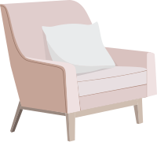

Дизайн маленькой квартиры:
5 решений, которые экономят место
Подробное руководство от Rerooms и Hype
Одна из самых сложных задач в дизайне маленькой квартиры — вписать все, что нужно для жизни так, чтобы осталось пространство и много света. Два основных принципа работы дизайнера в этой ситуации — продуманная планировка и тщательно рассчитанное наполнение. Отвоевать свободные сантиметры можно с помощью скрытых систем хранения, мебели-трансформера, игры цветов и фактур. А визуально разгрузить пространство помогают зрительные иллюзии. Вместе с Rerooms делимся удачными решениями и рассказываем, как сэкономить место на ограниченной площади.